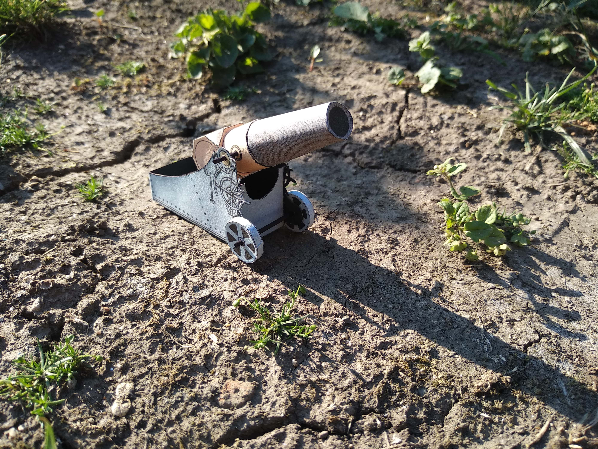
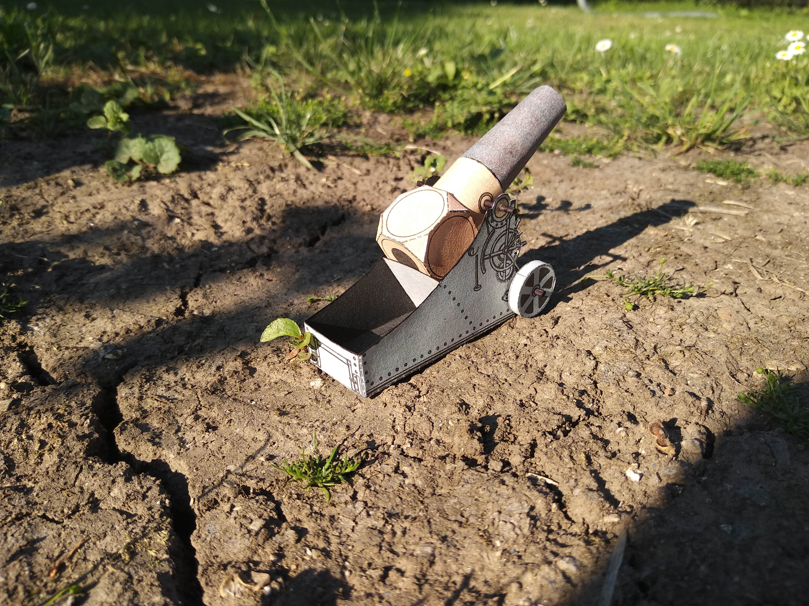

Dnes tu máme takovou rychlovku. Jedná se o model vystřihovánky děla přibližně z roku 1917. Vystřihovánka byla zabalena v ABC tak aby se vešla na jeden papír A4 pod edicí Muzeum vystřihovánek. Zase něco spíše méně vážného a spíš jen jako odreagování od zkoušek. Ale začínám uvažovat i o nějaké sadě skalpelu s čepelemi na vyřezávání a hlavně bych potřeboval vodovky jak sůl! Metodou pokusu a omylu jsem se přesvědčil, že lihovou fixu skutečně nejde retušovat.
 Dále jsem se pokusil i o nějakou scenérii a dělo zasadil do přibližně podobného prostředí měsíční krajiny zákopů (Avšak některá flora se spíš podobá modré agáve či bananovníku).